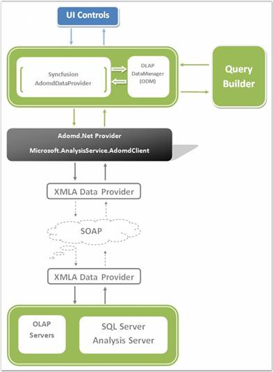

Syncfusion's OLAP architecture allows you to build a full life cycle reporting solution for your enterprise. Here are the important pieces of the architecture
· OLAP Access Layer - Built on top of ADOMD.NET and provides a high level object model to let you easily define reports.
· OLAP Controls - Chart, Grid, Gauge for ASP.NET, WPF and Silverlight.
· OLAP Report Builder - RAD tool to let you select the dimensions you are interested in visualizing and also lets you define the appearance for the chart, grid and gauge.
Let us see how the Syncfusion OLAP components allow you to build a full life cycle reporting solution for your enterprise.

Figure 5: Syncfusion OLAP Architecture
 Class Diagram
Class Diagram